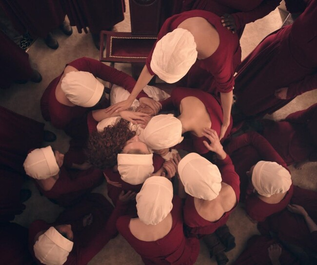
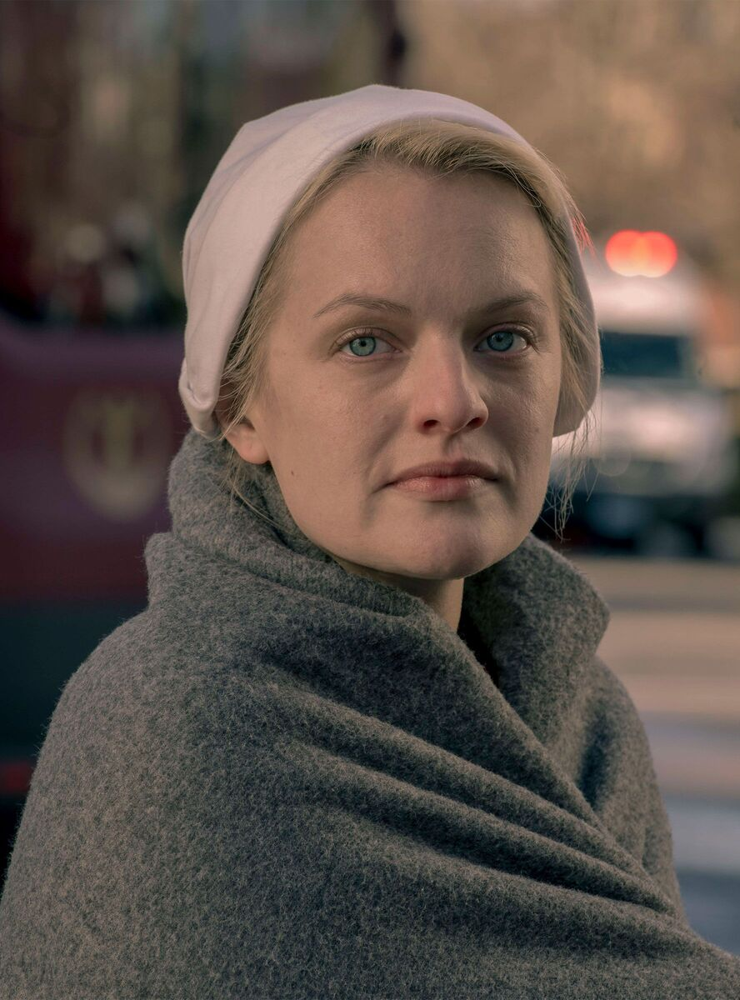
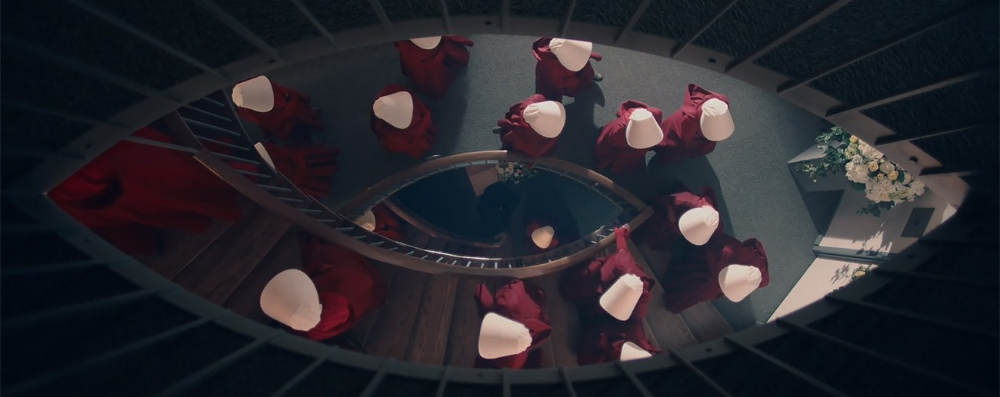

La serie:
El Cuento De La Criada
El cuento de la criada (serie de televisión)
El cuento de la criada (título original en inglés: The Handmaid's Tale) es una serie de televisión distópica estadounidense creada por Bruce Miller, basada en la novela homónima de 1985 de la escritora canadiense Margaret Atwood.
Producida por MGM Television y emitida por la plataforma de streaming Hulu, la producción de la primera temporada comenzó a finales de 2016
La serie se estrenó el 26 de abril de 2017 y concluyó de manera definitiva el 27 de mayo de 2025 tras un total de seis temporadas y 66 episodios.


Argumento de la Serie
En un futuro cercano, una crisis de fertilidad global causada por la contaminación y las enfermedades lleva a un grupo fundamentalista religioso a instaurar la República de Gilead, un régimen totalitario y teonómico sobre los antiguos Estados Unidos. En esta sociedad rígidamente jerarquizada por castas de colores, las mujeres pierden todos sus derechos civiles. Las pocas que aún son fértiles son reclutadas a la fuerza como «criadas» para ser sometidas a abusos sexuales ritualizados con el fin de engendrar hijos para la élite gobernante.
La trama sigue de cerca a June Osborne, rebautizada como Defred, quien es asignada al hogar del comandante Fred Waterford y su esposa Serena Joy. Tras ser capturada en un intento fallido de huir a Canadá junto a su familia, June debe soportar la opresión y el control de la policía secreta mientras lucha por sobrevivir. Su único objetivo es recuperar su libertad y rescatar a su hija, atrapada dentro de la estricta estructura del régimen.
Nolite Te Bastardes Carborundorum
La historia nos sitúa en la República de Gilead, un régimen militarizado, religioso fundamentalista que se alza tras una Guerra Civil en lo que antes era Estados Unidos.
A raíz de la caída de la natalidad a nivel mundial debido a la contaminación y enfermedades, el nuevo gobierno subyuga brutalmente a las mujeres. Por ley, las mujeres de Gilead pierden su independencia: no pueden trabajar, leer, escribir, ni controlar su propio dinero o propiedades.

Aquellas pocas mujeres que aún son fértiles son reclutadas a la fuerza como "Criadas" (o Handmaids). Sometidas a una esclavitud sexual ritualizada (conocida como "la ceremonia") son asignadas a los hogares de los comandantes de la élite con el único fin de engendrar hijos para ellos y sus esposas.
A través de los ojos de nuestra protagonista, June Osborne (interpretada por Elisabeth Moss), conocemos la vida como Defred dentro del hogar del comandante Fred Waterford y su esposa Serena Joy. Su lucha sobrevivir y recuperar la libertad para volver a reunirse con su familia que le fue arrebatada.